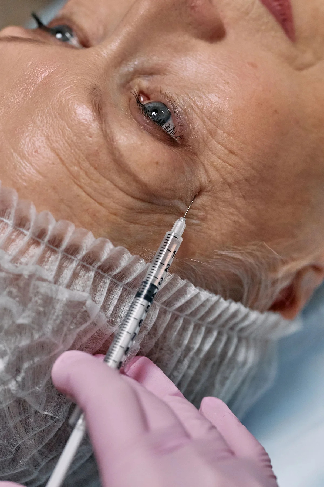

What dermal fillers are used for
Injectable fillers may be proposed for selected concerns involving cheeks, chin, jawline, folds or facial volume. Most commonly discussed products contain hyaluronic acid, though other filler types exist and behave differently. Treatment does not stop ageing and cannot reproduce a filtered image or guarantee symmetry.
Planning by proportion, not trend
A useful assessment considers the whole face, skin quality, bone structure, movement and previous treatment. More product does not necessarily mean a better result. Ask whether no treatment, skincare, another non-surgical option or surgery may better match the concern.
Risks
Swelling, tenderness, bruising, asymmetry and lumps are relatively common early effects. Infection, nodules, migration and inflammatory reactions can occur. Rare vascular occlusion can lead to tissue injury and, in very rare cases, visual loss.
Ask before agreeing
- What is the exact product, batch and expected duration?
- How does the treatment plan fit my facial proportions?
- What complications have you managed and how?
- What aftercare and emergency contact are included?
- How will previous filler affect the plan?
Manchester Vita provides general information and enquiry introductions. Suitability and product selection belong to the treating professional.
How much do dermal fillers cost in Manchester?
Around £200–£500
Indicative private price per syringe or treated area. Product, volume, anatomy, injector experience and review arrangements affect the final quote.
Get a dermal filler priceAreas served for dermal filler enquiries
We receive cheek, chin, jawline and facial filler enquiries from across Greater Manchester, including:
- Manchester city centre
- Didsbury
- Chorlton
- Sale
- Altrincham
- Stockport
- Salford
- Trafford
- Wilmslow
- Bury
- Bolton
- Oldham
Availability depends on the independent provider. Listed areas are service coverage, not Manchester Vita clinic locations.